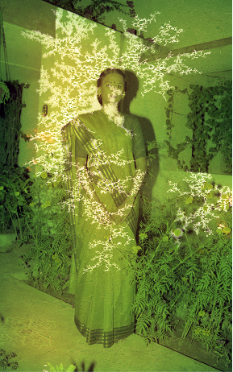

well worn, well loved
This project began with a set of damaged negatives discovered in a family photo archive. Stored for decades in a home in South India, the negatives bear the marks of that history: a greenish tint, branching patterns of fungal growth, the slow work of humidity on light-sensitive material. Rather than seeing this damage as loss, it reads here as a kind of provenance: a record of where an object has been, what it has lived through, evidence of something well-loved.
That quality, the way physical objects accumulate and display their own histories, feels increasingly rare in digital contexts. We know, on some level, that the digital is also physical. Every model run, every online interaction, draws on vast material networks and resources. But those infrastructures are so thoroughly abstracted that they become difficult to hold onto in practice.
well worn, well loved is an attempt to artificially reintroduce that sense of material trace. Drawing on the damaged negatives as training data, their textures and discolorations borrowed as a visual language, this speculative model accumulates its own layer of "damage" with each use. The output functions as a data visualization of the model's own usage history: the more it is used, the less legible it becomes, as degradation gradually overtakes the image. Built into the work is an inevitable end of life. At some point, the model passes beyond legibility and beyond use.